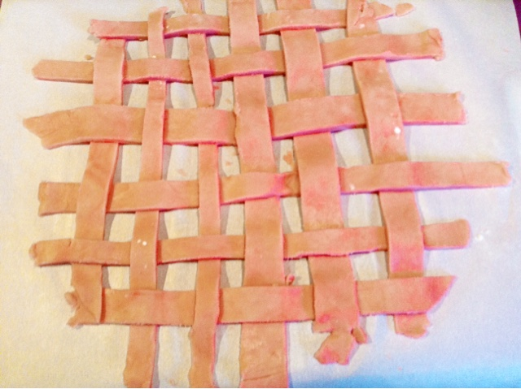

Pink Cherry Pie
Makes one 9" pie
Modified from here
INGREDIENTS
For the pie crust
3 cups AP flour
2 tbsp sugar
1 tsp salt
17 tbsp cold butter (2 sticks plus 2 tbsp)
Food coloring/cherry pie syrup to color (optional)
For the filling
2 cans cherry pie filling
DIRECTIONS
Add the flour, sugar and salt to a large mixing bowl and whisk together.Cut the cold butter into small cubes and add to the flour mixture. Rub the butter into the flour until it resembles breadcrumbs. Add in a couple of tablespoons of cherry pie syrup or water (and a few of drops of pink food coloring) to bring the dough together. If you need to add a little bit more water/syrup then just add it a little at a time.
You will probably need to knead the dough a little to get the color through. Try to work it as little as possible, but make sure that the color is distributed evenly.
Form 2 balls from the dough, flatten and cover each one with plastic wrap and refrigerate until cold and firm (at least 30 minutes).
Once chilled, take out one of the dough disks and place on a sheet of parchment paper. Beat the dough a little with a rolling pin until it softens slightly. Roll out the dough to about 10 inches (make sure it will fit the top of the pie dish).

To make the lattice top
Slice thin strips into the dough. Remove every other strip. With the remaining strips on the parchment paper, lift every other strip.
Place one of the strips that was removed perpendicular under the strips that were just lifted. Put the lifted strips back down. Lift the other strips and place another of the removed strips underneath. Continue alternating like this until you have placed all the removed strip back to form a lattice pattern.
Cover the top of the lattice with another sheet of parchment paper and freeze until needed.
Take the other dough disk out of the fridge, beat slightly and roll out to fit the bottom of the pie dish.
Once the bottom dough is in the pie dish refrigerate again until cold.
Once chilled, remove the pie dish from the refrigerator and add in the pie filling.
Put the lattice not top, pinch the dough together around the edges and trim.
Put the pies in the refrigerator while you preheat the oven to 500°F.
When the oven is preheated, put the pie in the oven and turn down to 425°F.
When the edges of the pie are golden brown turn down the oven temperature to 375°F so the crust doesn't burn. Total cooking time should be about 35 minutes.
Enjoy!
PRINT RECIPE